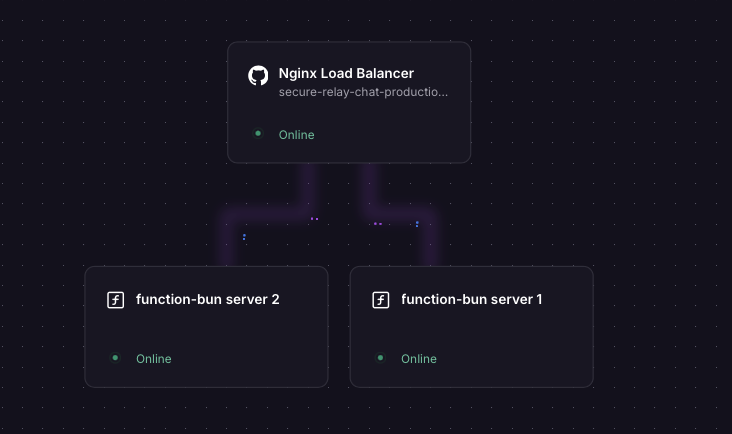
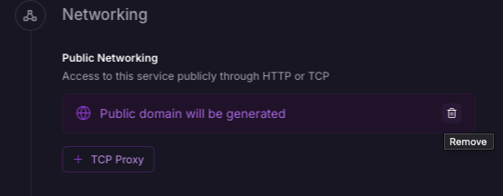
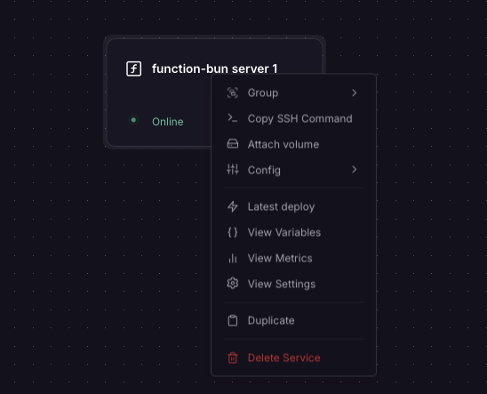
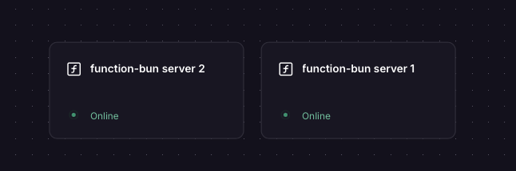
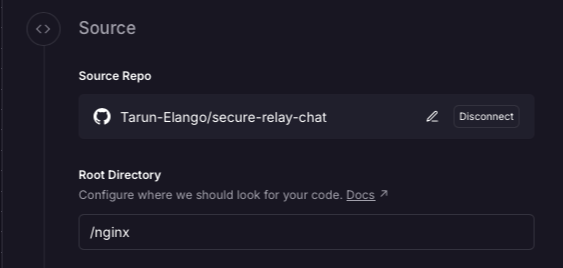
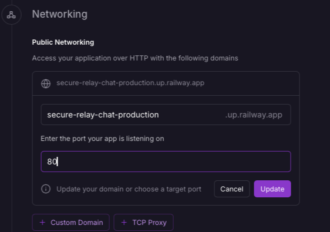
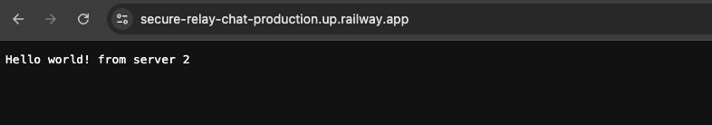

How to Set Up a Load Balancer with Nginx on Railway¶
last updated: April 4, 2026
Introduction¶
When horizontal scaling is needed, Railway's default approach is to increase the instance count of a service — Railway then handles load balancing automatically. However, in some cases you may want more control over the load balancing process (e.g. for sticky sessions, custom routing logic, caching, specific load balancing rules, etc.)
This guide walks through setting up a custom Nginx load balancer on Railway. We'll spin up two instances of a simple server and a third instance running Nginx, configured to distribute traffic between them.

¶Overview of the Instances¶
| Instance | Role |
|---|---|
function-bun server 1 |
Backend server #1 (public network disabled) |
function-bun server 2 |
Backend server #2 (public network disabled) |
| Nginx service | Load balancer (public-facing) |
Steps¶
Step 1 — Deploy Two Backend Server Instances¶
Create two separate Railway services running a simple HTTP server. The example below uses Bun with Hono, but any runtime works.
Create the first server¶
From the Railway dashboard, click on add a new service (for this example we will chose Function) and deploy it using the code below. For a function, we dont need to change any build or start commands — just deploy the code as is. choose the instance specs as needed.
Disable "Enable serverless" in the settings, under deploy, to ensure your service is always running and can receive traffic from Nginx without cold starts.
Backend server code — index.tsx (Bun v1.3)
// index.tsx (Bun v1.3 runtime)
import { Hono } from "hono@4";
import { cors } from 'hono/cors';
const app = new Hono();
app.use("/*", cors());
app.get("/", (c) => c.text("Hello world! 1")); // Change to "Hello world! 2" for the second instance
app.get("/api/health", (c) => c.json({ status: "ok" }));
const port = Number(import.meta.env.PORT) || 8080;
console.log("Server starting on port:", port);
Bun.serve({
port,
hostname: "::", // Listen on IPv6 — required for Railway's internal network, Check your runtime's docs for how to do this
fetch: app.fetch,
});
Important
The server must listen on :: (IPv6). Railway's internal network is IPv6-based, and services are not exposed on the public network — so if your app only listens on IPv4, the Nginx proxy will not be able to reach it. In Java this is handled automatically; in most other runtimes you need to set this explicitly.
Once deployed, disable the public network for this service — you'll find this option in the Settings tab under Network. These backend instances should only be accessible internally via Nginx, not over the public internet.

Create the second server¶
Right-click your first service in the Railway dashboard and select Duplicate. In the duplicated service, change "Hello world! 1" to "Hello world! 2" — this lets you verify that traffic is actually being split between the two instances when you test later.

Disable the public network on the second service as well. You should now have two backend services running, each returning a distinct response, with no public network exposure. Keep note of the private internal hostnames (settings -> networking), this will be required in the next step.

Step 2 — Create the Nginx Load Balancer Service¶
Create a third Railway service by clicking on add a new service, select 'Github Repository' and select your repository. When connecting the github repo and directory, make sure the source root directory contains both the Dockerfile and nginx.conf files (code provided below).

Update the internal hostname in nginx.conf if your backend services have different names. The hostname should be in the format <service-name>.railway.internal (e.g. function-bun.railway.internal).
Nginx configuration — nginx.conf
events {
worker_connections 1024;
}
http {
# Railway's internal DNS is IPv6-based — point resolver at fd12::10
resolver [fd12::10] valid=10s ipv6=on;
# Split traffic 50/50 across both backends using the client IP + URI as the key
split_clients "${remote_addr}${request_uri}" $backend {
50% "function-bun.railway.internal"; # <-- Update with your backend service's internal hostname
50% "function-bun-copy.railway.internal"; # <-- Update with your backend service's internal hostname
}
server {
listen 80;
listen [::]:80;
# Local health check endpoint for the Nginx service itself
location /health-local {
return 200 "nginx ok";
add_header Content-Type text/plain;
}
location / {
proxy_pass http://$backend:8080;
proxy_set_header Host $host;
proxy_set_header X-Real-IP $remote_addr;
proxy_set_header X-Forwarded-For $proxy_add_x_forwarded_for;
proxy_connect_timeout 5s;
proxy_read_timeout 30s;
}
}
}
Dockerfile
FROM nginx:alpine
COPY nginx.conf /etc/nginx/nginx.conf
EXPOSE 80
CMD ["nginx", "-g", "daemon off;"]
Why split_clients instead of upstream?
On Railway, service IPs change on redeploy, so static resolution is unreliable.
With upstream, Nginx resolves hostnames only at startup, so it keeps using stale IPs and returns 502s until restarted.
Using split_clients with a variable in proxy_pass enables dynamic routing per request.
With a resolver, Nginx re-resolves DNS each time, so new backend IPs are picked up instantly.
In network settings for the Nginx service, update the port to 80 and ensure the public network is enabled.

Deploy the Nginx service after making these changes. when you hit the public URL of the Nginx service, it will route requests to both backend instances in a 50/50 split based on the client IP + URI.
Step 3 — Test It¶
Hit the public URL of your Nginx instance in a browser. You should see Hello world! returned. Refreshing multiple times should route requests across both backend instances.

You can also verify the Nginx service itself is healthy at:
https://<your-nginx-public-url>/health-local
Furthermore, you can make changes to Nginx's configuration (e.g. adjust load balancing weights, add caching, add sticky sessions, etc.) and redeploy the Nginx service to apply them.
Things to Note¶
The Nginx public URL must be exposed on port 80¶
Railway maps your service's public URL to the port you specify. Nginx is configured to listen 80, so the public URL must be set to port 80 in the Railway dashboard — otherwise incoming traffic won't reach Nginx.
Backend apps must listen on IPv6 (::)¶
Railway's internal network (used for service-to-service communication) is IPv6-only. Services are not reachable via their internal hostnames over IPv4. Your backend app must explicitly bind to :: to accept connections on the internal network.
- Bun / Node.js: Set
hostname: "::"in your server config (these runtimes default to IPv4 only) - Java: Listens on both IPv4 and IPv6 by default — no change needed
- Other runtimes: Check your framework's docs for how to bind to
0.0.0.0/::or both